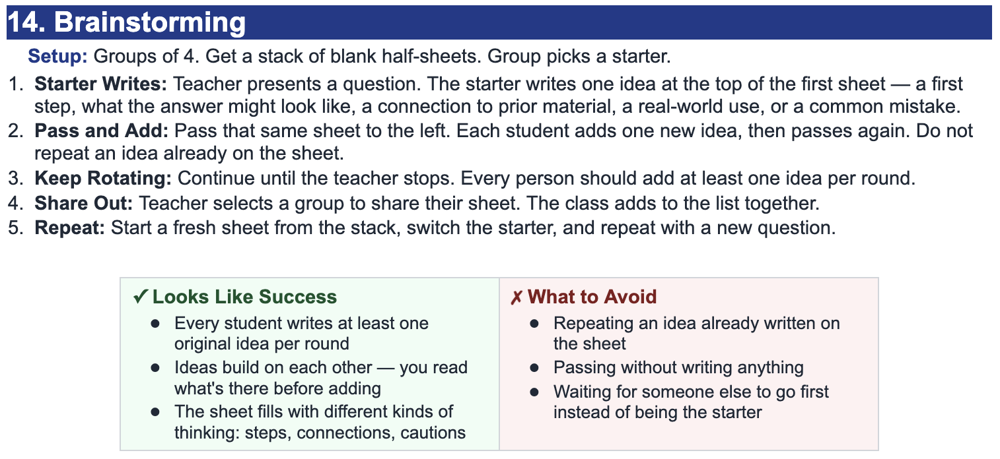

Problem 2
Compare the parent graph and transformed graph. Write the equation of the transformed graph.


For \(g(x)=-(x+1)^2-3\), identify the parent function and the transformations.
Parent function: \(y=x^2\).
Transformations: shift left 1, reflect over the \(x\)-axis, and shift down 3.
Compare the parent graph and transformed graph. Write the equation of the transformed graph.
The dashed graph is the parent function \(y=x^2\).
The transformed graph has vertex \((-2,3)\) and opens downward, so a possible equation is:
\[y=-(x+2)^2+3\]
Two students describe \(g(x)=3f(x+2)-4\). Student A says the graph shifts left 2, stretches vertically by 3, and shifts down 4. Student B says the graph shifts right 2, stretches vertically by 3, and shifts down 4. Who is correct? Justify your answer.
Student A is correct.
In \(g(x)=3f(x+2)-4\), the input \(x+2\) shifts the graph left 2, the outside factor 3 creates a vertical stretch by 3, and the \(-4\) shifts the graph down 4.
A graph is shown. Write a possible equation and explain why more than one equation might be possible if the parent function is not identified.

If the parent function is \(f(x)=|x|\), a possible equation is:
\[y=2|x-1|-3\]
More than one equation might be possible if the parent function is not identified because different parent functions can share similar visual features, such as a vertex or turning point.
State the \(y\)-intercept of each function.
\(y=x^2-7x+10\)
\(y=3x^2+2x-8\)
\(y=-5x^2+4\)
Fill in the blanks.
A quadratic table with equally spaced \(x\)-values has constant ______ differences.
The form \(a(x-h)^2+k\) is called ______ form.
The form \(a(x-p)(x-q)\) is called ______ form.
The form \(ax^2+bx+c\) is called ______ form.
Fill-ins:
Which equation has zeros \(-4\) and \(6\)?
\(y=(x-4)(x+6)\)
\(y=(x+4)(x-6)\)
\(y=(x-6)(x-4)\)
\(y=(x+6)(x-4)\)
Explain how you know.
The correct choice is b.
Zeros \(-4\) and \(6\) mean the factors are \((x+4)\) and \((x-6)\).
Which equation has vertex \((3,-7)\)?
\(y=(x+3)^2-7\)
\(y=(x-3)^2-7\)
\(y=(x-7)^2+3\)
\(y=(x+7)^2-3\)
The correct choice is b.
In \(y=a(x-h)^2+k\), the vertex is \((h,k)\), so \(y=(x-3)^2-7\) has vertex \((3,-7)\).
A quadratic has \(x\)-intercepts at \((-4,0)\) and \((6,0)\), and passes through \((0,-24)\).
Write the equation in intercept form.
Rewrite the equation in standard form.
The table shows a quadratic function. \[ \begin{array}{c|ccccc} x&0&1&2&3&4\\ \hline y&5&8&13&20&29 \end{array} \]
Find the first differences.
Find the second differences.
Determine the value of \(a\).
Write an equation for the function.
Compare these two equations: \[ f(x)=2(x-3)^2-8 \] \[ g(x)=2(x-1)(x-5) \]
Rewrite both equations in standard form.
Explain why they represent the same function.
State the vertex and zeros.
A quadratic function is shown by the table. \[ \begin{array}{c|ccccc} x&0&1&2&3&4\\ \hline f(x)&12&3&-2&-3&0 \end{array} \]
Use first and second differences to verify the function is quadratic.
Write the equation in standard form.
Rewrite the equation in vertex form.
Find the zeros using a method of your choice.
Explain how the table, standard form, vertex form, and zeros all describe the same function.
State the \(y\)-intercept of each line.
\(y=4x-8\)
\(y=-x+11\)
\(y=\frac35x\)
\(y=-2x+\frac12\)
The table shows a linear relationship.
| \(x\) | 1 | 3 | 5 | 7 | 9 |
|---|---|---|---|---|---|
| \(y\) | -4 | 2 | 8 | 14 | 20 |
Find the slope.
Use one point to write an equation.
Predict \(y\) when \(x=11\).
The table shows a relationship.
| \(x\) | 0 | 2 | 4 | 6 | 8 |
|---|---|---|---|---|---|
| \(y\) | 1 | 6 | 11 | 16 | 21 |
Explain how you know the relationship is linear.
Write an equation.
Describe what the slope means in the table.
A water tank is draining at a constant rate. The table shows the amount of water remaining.
| Time (min) | 0 | 4 | 8 | 12 |
|---|---|---|---|---|
| Water (gal) | 90 | 74 | 58 | 42 |
Write a linear equation for the amount of water remaining.
Interpret the slope.
Interpret the \(y\)-intercept.
Determine when the tank will be empty.
State a reasonable domain and range for the context.